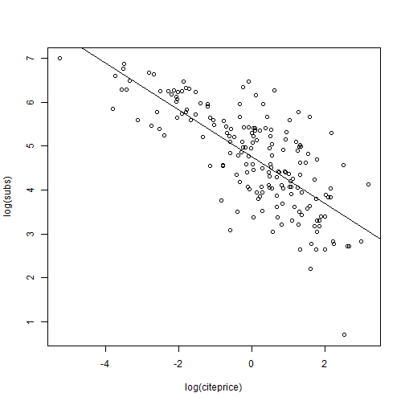

引用
introduction
Goal: Estimate the effect of the price per citation on the number of library subscriptions
initial
options(prompt = “R> “, continue = “+ “, width = 64,
digits = 4, show.signif.stars = FALSE, useFancyQuotes = FALSE)
library(“AER”)
set.seed(1071)
library("AER")
#> Warning: package 'AER' was built under R version 4.0.3
#> Loading required package: car
#> Warning: package 'car' was built under R version 4.0.3
#> Loading required package: carData
#> Warning: package 'carData' was built under R version 4.0.3
#> Loading required package: lmtest
#> Warning: package 'lmtest' was built under R version 4.0.3
#> Loading required package: zoo
#> Warning: package 'zoo' was built under R version 4.0.3
#>
#> Attaching package: 'zoo'
#> The following objects are masked from 'package:base':
#>
#> as.Date, as.Date.numeric
#> Loading required package: sandwich
#> Warning: package 'sandwich' was built under R version 4.0.3
#> Loading required package: survival
#> Warning: package 'survival' was built under R version 4.0.3
data("Journals", package = "AER")
#View(Journals)
journals <- Journals[, c("subs", "price")]
journals$citeprice <- Journals$price/Journals$citations
summary(journals)
#> subs price citeprice
#> Min. : 2.0 Min. : 20.0 Min. : 0.005223
#> 1st Qu.: 52.0 1st Qu.: 134.5 1st Qu.: 0.464495
#> Median : 122.5 Median : 282.0 Median : 1.320513
#> Mean : 196.9 Mean : 417.7 Mean : 2.548455
#> 3rd Qu.: 268.2 3rd Qu.: 540.8 3rd Qu.: 3.440171
#> Max. :1098.0 Max. :2120.0 Max. :24.459459❓ 練習:
改成datatable
plot(log(subs) ~ log(citeprice), data = journals)
jour_lm <- lm(log(subs) ~ log(citeprice), data = journals)
abline(jour_lm)
❓ what is jour_lm ?
class(jour_lm)
#> [1] "lm"
names(jour_lm)
#> [1] "coefficients" "residuals" "effects" "rank"
#> [5] "fitted.values" "assign" "qr" "df.residual"
#> [9] "xlevels" "call" "terms" "model"
str(jour_lm) #📝 注意`list of 12`
#> List of 12
#> $ coefficients : Named num [1:2] 4.766 -0.533
#> ..- attr(*, "names")= chr [1:2] "(Intercept)" "log(citeprice)"
#> $ residuals : Named num [1:180] -1.185 -0.739 -0.332 -2.725 1.136 ...
#> ..- attr(*, "names")= chr [1:180] "APEL" "SAJoEH" "CE" "MEPiTE" ...
#> $ effects : Named num [1:180] -63.599 -11.222 -0.338 -2.715 1.146 ...
#> ..- attr(*, "names")= chr [1:180] "(Intercept)" "log(citeprice)" "" "" ...
#> $ rank : int 2
#> $ fitted.values: Named num [1:180] 3.82 4.82 3.17 3.42 3.43 ...
#> ..- attr(*, "names")= chr [1:180] "APEL" "SAJoEH" "CE" "MEPiTE" ...
#> $ assign : int [1:2] 0 1
#> $ qr :List of 5
#> ..$ qr : num [1:180, 1:2] -13.4164 0.0745 0.0745 0.0745 0.0745 ...
#> .. ..- attr(*, "dimnames")=List of 2
#> .. .. ..$ : chr [1:180] "APEL" "SAJoEH" "CE" "MEPiTE" ...
#> .. .. ..$ : chr [1:2] "(Intercept)" "log(citeprice)"
#> .. ..- attr(*, "assign")= int [1:2] 0 1
#> ..$ qraux: num [1:2] 1.07 1.01
#> ..$ pivot: int [1:2] 1 2
#> ..$ tol : num 1e-07
#> ..$ rank : int 2
#> ..- attr(*, "class")= chr "qr"
#> $ df.residual : int 178
#> $ xlevels : Named list()
#> $ call : language lm(formula = log(subs) ~ log(citeprice), data = journals)
#> $ terms :Classes 'terms', 'formula' language log(subs) ~ log(citeprice)
#> .. ..- attr(*, "variables")= language list(log(subs), log(citeprice))
#> .. ..- attr(*, "factors")= int [1:2, 1] 0 1
#> .. .. ..- attr(*, "dimnames")=List of 2
#> .. .. .. ..$ : chr [1:2] "log(subs)" "log(citeprice)"
#> .. .. .. ..$ : chr "log(citeprice)"
#> .. ..- attr(*, "term.labels")= chr "log(citeprice)"
#> .. ..- attr(*, "order")= int 1
#> .. ..- attr(*, "intercept")= int 1
#> .. ..- attr(*, "response")= int 1
#> .. ..- attr(*, ".Environment")=<environment: R_GlobalEnv>
#> .. ..- attr(*, "predvars")= language list(log(subs), log(citeprice))
#> .. ..- attr(*, "dataClasses")= Named chr [1:2] "numeric" "numeric"
#> .. .. ..- attr(*, "names")= chr [1:2] "log(subs)" "log(citeprice)"
#> $ model :'data.frame': 180 obs. of 2 variables:
#> ..$ log(subs) : num [1:180] 2.639 4.078 2.833 0.693 4.564 ...
#> ..$ log(citeprice): num [1:180] 1.7677 -0.0953 3.0025 2.5294 2.5089 ...
#> ..- attr(*, "terms")=Classes 'terms', 'formula' language log(subs) ~ log(citeprice)
#> .. .. ..- attr(*, "variables")= language list(log(subs), log(citeprice))
#> .. .. ..- attr(*, "factors")= int [1:2, 1] 0 1
#> .. .. .. ..- attr(*, "dimnames")=List of 2
#> .. .. .. .. ..$ : chr [1:2] "log(subs)" "log(citeprice)"
#> .. .. .. .. ..$ : chr "log(citeprice)"
#> .. .. ..- attr(*, "term.labels")= chr "log(citeprice)"
#> .. .. ..- attr(*, "order")= int 1
#> .. .. ..- attr(*, "intercept")= int 1
#> .. .. ..- attr(*, "response")= int 1
#> .. .. ..- attr(*, ".Environment")=<environment: R_GlobalEnv>
#> .. .. ..- attr(*, "predvars")= language list(log(subs), log(citeprice))
#> .. .. ..- attr(*, "dataClasses")= Named chr [1:2] "numeric" "numeric"
#> .. .. .. ..- attr(*, "names")= chr [1:2] "log(subs)" "log(citeprice)"
#> - attr(*, "class")= chr "lm"❓ 自由度在哪?
最簡單的報告產生函數
summary(jour_lm)
#>
#> Call:
#> lm(formula = log(subs) ~ log(citeprice), data = journals)
#>
#> Residuals:
#> Min 1Q Median 3Q Max
#> -2.72478 -0.53609 0.03721 0.46619 1.84808
#>
#> Coefficients:
#> Estimate Std. Error t value Pr(>|t|)
#> (Intercept) 4.76621 0.05591 85.25 <2e-16 ***
#> log(citeprice) -0.53305 0.03561 -14.97 <2e-16 ***
#> ---
#> Signif. codes: 0 '***' 0.001 '**' 0.01 '*' 0.05 '.' 0.1 ' ' 1
#>
#> Residual standard error: 0.7497 on 178 degrees of freedom
#> Multiple R-squared: 0.5573, Adjusted R-squared: 0.5548
#> F-statistic: 224 on 1 and 178 DF, p-value: < 2.2e-16jour_slm <- summary(jour_lm)
class(jour_slm)
#> [1] "summary.lm"
names(jour_slm)
#> [1] "call" "terms" "residuals" "coefficients"
#> [5] "aliased" "sigma" "df" "r.squared"
#> [9] "adj.r.squared" "fstatistic" "cov.unscaled"
jour_slm$coefficients
#> Estimate Std. Error t value Pr(>|t|)
#> (Intercept) 4.7662121 0.05590908 85.24934 2.953913e-146
#> log(citeprice) -0.5330535 0.03561320 -14.96786 2.563943e-33anova(jour_lm)
#> Analysis of Variance Table
#>
#> Response: log(subs)
#> Df Sum Sq Mean Sq F value Pr(>F)
#> log(citeprice) 1 125.93 125.934 224.04 < 2.2e-16 ***
#> Residuals 178 100.06 0.562
#> ---
#> Signif. codes: 0 '***' 0.001 '**' 0.01 '*' 0.05 '.' 0.1 ' ' 1
coef(jour_lm)
#> (Intercept) log(citeprice)
#> 4.7662121 -0.5330535
confint(jour_lm, level = 0.95)
#> 2.5 % 97.5 %
#> (Intercept) 4.6558822 4.8765420
#> log(citeprice) -0.6033319 -0.4627751predict(jour_lm, newdata = data.frame(citeprice = 2.11),
interval = "confidence")
#> fit lwr upr
#> 1 4.368188 4.247485 4.48889
predict(jour_lm, newdata = data.frame(citeprice = 2.11),
interval = "prediction")
#> fit lwr upr
#> 1 4.368188 2.883746 5.852629lciteprice <- seq(from = -6, to = 4, by = 0.25)
jour_pred <- predict(jour_lm, interval = "prediction",
newdata = data.frame(citeprice = exp(lciteprice)))
plot(log(subs) ~ log(citeprice), data = journals)
lines(jour_pred[, 1] ~ lciteprice, col = 1)
lines(jour_pred[, 2] ~ lciteprice, col = 1, lty = 2)
lines(jour_pred[, 3] ~ lciteprice, col = 1, lty = 2)
參數為模型類別的plot()
產生6種,預設4種
- residuals versus fitted values,
- QQ plot for normality,
- scale-location plot,
- standardized residuals versus leverages.
個別的圖:例如QQ plot: plot(jour_lm, which = 2)
par(mfrow = c(2, 2))
plot(jour_lm)par(mfrow = c(1, 1))
linearHypothesis(jour_lm, "log(citeprice) = -0.5")
#> Linear hypothesis test
#>
#> Hypothesis:
#> log(citeprice) = - 0.5
#>
#> Model 1: restricted model
#> Model 2: log(subs) ~ log(citeprice)
#>
#> Res.Df RSS Df Sum of Sq F Pr(>F)
#> 1 179 100.54
#> 2 178 100.06 1 0.48421 0.8614 0.3546❓ 利用資料集 cars : dist ~ speed
- 分別給出 speed=12,19,24 的信賴區間和預測區間
- 畫圖